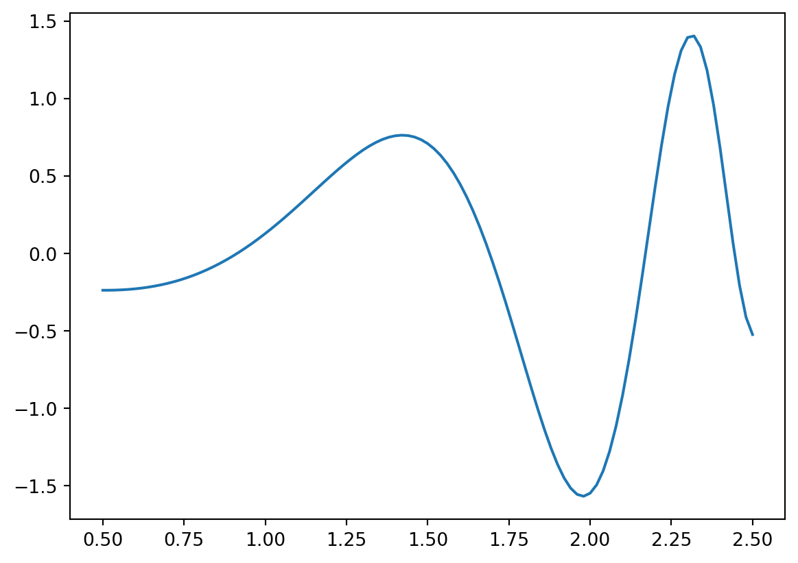
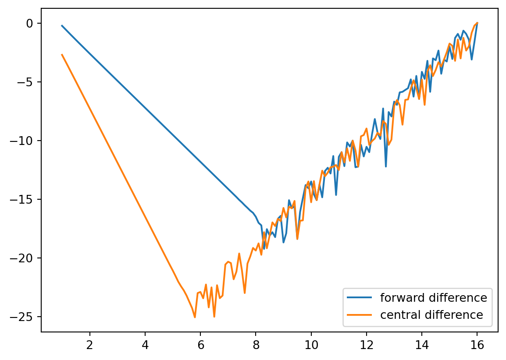

import numpy as np
a = 0.1
print(a+a+a==0.3,a+a+a+a==0.4)False True금융 수치해석의 소개
주로 파생상품 평가와 최적화 방법론에 대해서 다룰 예정
\(ds=rSdt+\sigma SdW^Q\)
기하학적 브라운운동을 따르는 기초자산에 대한 파생상품의 가격 \(f(t,S)\)는 아래의 PDE로 표현됨
\(f_t+\frac{1}{2}\sigma^2S^2f_{ss}+rSf_s-rf=0\)
이 블랙숄즈 미분방정식을 컴퓨터로 풀어내는 것이 주요 내용임
여기에는 반드시 연속적인 수식을 이산화하는 과정이 필요하며, 다양한 수치해석적인 기법이 활용됨
대표적으로 유한차분법(Finite Difference Method, FDM)이 존재
이외의 다양한 최적화방법론은 시간이 여유롭다면 이것저것 다룰 예정
수치해석기법을 사용할 때 필연적으로 오차(error) 발생
Truncation error : 연속적인 수학적인 모델을 이산화하면서 발생하는 오차(e.g. 미분계수)
Rounding error : 컴퓨터 시스템상 실수(real number)를 정확히 표현할 수 없는 데에서 기인(2진법 vs. 10진법)
import numpy as np
a = 0.1
print(a+a+a==0.3,a+a+a+a==0.4)False True컴퓨터가 실수를 나타내는 방법은 일반적으로 \(x=\pm n\times b^e\)로 나타냄.
여기서 \(n\)은 가수, \(e\)는 지수이며, 일반적으로 밑인 \(b\)는 2를 사용함.
컴퓨터에서 많이 사용하는 float타입 실수는 32bit를 사용하여 실수를 표현하며,
이는 \(2^32\)가지로 모든 실수를 표현하게됨을 의미함. (정수는 int타입으로 모두 표현가능)
따라서 소수점에 따라 정확한 값을 나타내지 못하는 문제는 항상 존재.
실수표현의 정밀도는 \(float(1+\epsilon_{math})>1\)이 되는 가장 작은 \(\epsilon_{math}\)를 의미
e = 1
while 1 + e > 1:
e = e/2
e_math = 2 * e
print(e_math)2.220446049250313e-16내장함수 활용 가능. 파이썬에서는 기본적으로 64bit double타입을 사용함
import numpy as np
print(np.finfo(np.double).eps,
np.finfo(float).eps)2.220446049250313e-16 2.220446049250313e-16print(1+e, 1+e+e, 1+2*e, 1+1.0000001*e)1.0 1.0 1.0000000000000002 1.0000000000000002많이 쓰이는 double타입의 경우 64bit로 실수를 표현하는데,
\(x=\pm n\times 2^e\)에서 부호(\(\pm\)) 1자리, 가수(\(n\)) 52자리, 지수 11자리(\(e\))를 의미
절대오차 : \(|{\hat{x}-x}|\)
상대오차 : \(\frac{|{\hat{x}-x}|}{|x|}\)
결합오차 : \(e_{comb}=\frac{|{\hat{x}-x}|}{|x|+1}\)
\[f'(x)=\lim_{h\rightarrow 0}\frac{f(x+h)-f(x)}{h}\]
컴퓨터로는 \(h\rightarrow 0\)을 정확히 표현할 수 없음.
따라서, 적당히 작은 값으로 이를 대체하여 \(f'(x)\)를 근사해야함.
\[f(x)=\sum_{k=0}^\infty \frac{f^{(k)}(x_0)}{k!}(x-x_0)^{k}=\sum_{k=0}^n \frac{f^{(k)}(x_0)}{k!}(x-x_0)^{k}+\frac{f^{(n+1)}(\xi)}{(n+1)!}(x-x_0)^{n+1}\]
이를 도함수에 적용하면,
\[f(x+h)=f(x)+hf'(x)+\frac{h^2}{2}f''(x)+\frac{h^3}{3!}f'''(x)+\dotsm+\frac{h^n}{n!}f^{(n)}(x)+R_n(x+h)\]
\(n=1\)을 적용하면,
\(\Rightarrow\;f(x+h)=f(x)+hf'(x)+\frac{h^2}{2}f''(\xi)\;for\;\xi\in[x,x+h]\)
\(\Rightarrow\;f'(x)=\frac{f(x+h)-f(x)}{h}-\frac{h}{2}f''(\xi)\;(Forward\;Approximation)\)
\(n=2\)를 적용하고 forward - backward를 정리하면,
\(f'(x)=\frac{f(x+h)-f(x-h)}{h}-\frac{h^2}{3}f'''(\xi)\;(Central\;Difference\;Approximation)\)
::: {.callout, title=“Central Difference Approximation”} \(for\;n=2,\)
\((Forward)\;f(x+h)=f(x)+hf'(x)+\frac{h^2}{2}f''(x)+\frac{h^3}{3!}f'''(\xi_+),\;\xi\in[x,x+h]\)
\((Backward)\;f(x-h)=f(x)-hf'(x)+\frac{h^2}{2}f''(x)-\frac{h^3}{3!}f'''(\xi_-),\;\xi\in[x-h,x]\)
\(f(x+h)-f(x-h)=2hf'(x)+\frac{h^2}{6}\{f'''(\xi_+)+f'''(\xi_-)\}\)
\(\Rightarrow\;f'(x)=\frac{f(x+h)-f(x-h)}{h}-\frac{h^2}{3}f'''(\xi),\;\xi\in[x-h,x+h]\) :::
위의 식에서 볼 수 있는 것처럼, Central 방식에서는 truncation error의 order가 \(h^2\)이므로,
다른 방식에 비해서 오차가 훨씬 줄어들게 됨
유사한 방식으로 이계도함수와 편도함수를 유도하면,
\(f''(x)=\frac{f(x+h)+f(x-h)-2f(x)}{h^2}-\frac{h^2}{24}f^{(4)}(\xi)\)
\(f_x(x,y)=\frac{f(x+h_x,y)-f(x-h_x,y)}{2h_x}+trunc.\;error\)
Forward difference approximation을 사용하고, \(|f''(x)|<=M\)이라고 하면,
\(|f_h'(x)-f'(x)|=\frac{h}{2}|f''(x)|<=\frac{h}{2}M\;(trunc.\;error)\)
유인물 참조
총오차 최소화를 위한 \(h^*\) 산출이 목표
\(f(x)=cos(x^x)-sin(e^x)\)
함수 및 도함수(analytic form) 정의 및 도식화
import numpy as np
import matplotlib.pyplot as plt
def fun(x):
return np.cos(x**x) - np.sin(np.exp(x))
def fprime(x):
return -np.sin(x**x)*(x**x)*(np.log(x)+1) - np.cos(np.exp(x))*np.exp(x)
x = np.linspace(0.5,2.5,101)
y = fun(x)
plt.plot(x,y,'-')
미분계수 산출
x = 1.5
d = fprime(x)
print("derivative = ", d)derivative = -1.466199173237208forward 및 central difference approx. 산출 및 비교, 총오차를 log scale로 표현
trunc. error는 h가 작아질수록 감소하지만 특정구간 이후에는 rounding error가 발생하므로
총오차는 항상 감소하지 않게 됨.
최적 \(h^*\)를 찾는 것이 매우 중요함
p = np.linspace(1,16,151)
h = 10**(-p)
def forward_difference(x,h):
return (fun(x+h)-fun(x)) / h
def central_difference(x,h):
return (fun(x+h)-fun(x-h)) / (2*h)
fd = forward_difference(x, h)
cd = central_difference(x, h)
print("forward = ", fd)
print("central = ", cd)
fd_error = np.log(np.abs(fd-d)/np.abs(d))
cd_error = np.log(np.abs(cd-d)/np.abs(d))
plt.plot(p,fd_error, p, cd_error)
plt.legend(['forward difference', 'central difference'])forward = [-2.62212289 -2.37366424 -2.17930621 -2.02733993 -1.90838758 -1.81511559
-1.74184228 -1.68417626 -1.63872005 -1.60283855 -1.57448171 -1.55204964
-1.53429022 -1.52022092 -1.50906909 -1.50022597 -1.49321118 -1.48764519
-1.48322779 -1.47972134 -1.47693759 -1.47472735 -1.4729723 -1.4715786
-1.47047179 -1.46959277 -1.46889464 -1.46834015 -1.46789975 -1.46754995
-1.4672721 -1.46705142 -1.46687612 -1.46673689 -1.46662629 -1.46653844
-1.46646866 -1.46641323 -1.46636921 -1.46633424 -1.46630646 -1.46628439
-1.46626686 -1.46625294 -1.46624188 -1.4662331 -1.46622612 -1.46622058
-1.46621618 -1.46621268 -1.4662099 -1.4662077 -1.46620594 -1.46620455
-1.46620344 -1.46620257 -1.46620187 -1.46620131 -1.46620087 -1.46620053
-1.46620025 -1.46620002 -1.46619985 -1.46619971 -1.46619959 -1.46619951
-1.46619944 -1.46619939 -1.46619934 -1.46619931 -1.46619927 -1.46619923
-1.46619922 -1.46619918 -1.46619921 -1.46619915 -1.46619915 -1.46619919
-1.46619909 -1.46619907 -1.46619916 -1.46619915 -1.46619876 -1.46619938
-1.46619893 -1.46619919 -1.46619932 -1.46619869 -1.46619769 -1.4662003
-1.46619716 -1.46619985 -1.46619876 -1.46620071 -1.46619865 -1.46619427
-1.46619269 -1.46620314 -1.46618158 -1.46619854 -1.46618273 -1.46617469
-1.46619173 -1.46614311 -1.46615961 -1.46626449 -1.46620595 -1.46619201
-1.46615356 -1.46621617 -1.46616053 -1.46617469 -1.46608615 -1.46578868
-1.46632693 -1.46612406 -1.46518938 -1.46619201 -1.46545305 -1.46568705
-1.46438417 -1.46757238 -1.46221506 -1.46202287 -1.46130718 -1.46050672
-1.45413969 -1.46897416 -1.45004198 -1.46392328 -1.44328993 -1.4535955
-1.40766793 -1.46202287 -1.39437708 -1.40433339 -1.32596324 -1.44671698
-1.40100674 -1.41101039 -1.66533454 -1.39768798 -1.05575095 -0.88607446
-1.11550166 -0.70216669 -0.88397549 -1.11285921 -1.40100674 -1.76376299
0. ]
central = [-1.5635526 -1.52856423 -1.50592274 -1.49141188 -1.48216656 -1.4762975
-1.47258018 -1.47022905 -1.46874334 -1.46780503 -1.46721263 -1.46683872
-1.46660274 -1.46645382 -1.46635985 -1.46630056 -1.46626314 -1.46623954
-1.46622464 -1.46621524 -1.46620931 -1.46620557 -1.46620321 -1.46620172
-1.46620078 -1.46620019 -1.46619981 -1.46619958 -1.46619943 -1.46619933
-1.46619927 -1.46619924 -1.46619921 -1.4661992 -1.46619919 -1.46619918
-1.46619918 -1.46619918 -1.46619918 -1.46619917 -1.46619917 -1.46619917
-1.46619917 -1.46619917 -1.46619917 -1.46619917 -1.46619917 -1.46619917
-1.46619917 -1.46619917 -1.46619917 -1.46619917 -1.46619917 -1.46619917
-1.46619917 -1.46619917 -1.46619917 -1.46619917 -1.46619917 -1.46619917
-1.46619918 -1.46619917 -1.46619917 -1.46619917 -1.46619917 -1.46619917
-1.46619917 -1.46619917 -1.46619918 -1.46619918 -1.46619917 -1.46619916
-1.46619918 -1.46619915 -1.46619918 -1.46619915 -1.46619923 -1.46619922
-1.46619909 -1.46619924 -1.46619938 -1.46619908 -1.46619894 -1.46619938
-1.46619879 -1.46619919 -1.4661991 -1.46619925 -1.46619804 -1.46620118
-1.46619883 -1.46620125 -1.46619876 -1.46620071 -1.46620423 -1.46619603
-1.4661949 -1.46620592 -1.46619208 -1.46620736 -1.46619383 -1.46617469
-1.46620932 -1.46616527 -1.4661875 -1.46626449 -1.46622805 -1.46619201
-1.46629366 -1.46630436 -1.46638257 -1.46624457 -1.46626211 -1.46612096
-1.46632693 -1.4662996 -1.46585236 -1.46647023 -1.46615356 -1.46612799
-1.46493928 -1.46827122 -1.46485444 -1.46645324 -1.46409593 -1.46401756
-1.4607695 -1.47732061 -1.46054953 -1.46392328 -1.45439216 -1.46757238
-1.44285963 -1.50632659 -1.45015216 -1.43944172 -1.41436079 -1.50235994
-1.40100674 -1.58738669 -1.72084569 -1.67722557 -1.40766793 -1.10759308
-1.39437708 -1.05325004 -1.32596324 -1.66928882 -2.10151011 -2.64564449
0. ]
수치적 불안정성 : 알고리즘이 rounding error를 증폭시켜 결과값이 크게 달라짐
악조건 : input data의 작은 변동이 output solution에 큰 변화를 일으킴
문제 f(x)의 해가 x(input)에 얼마나 영향을 받는지 나타내는 값
탄력성의 절대값 : \(cond(f(x))\approx\frac{|xf'(x)|}{|f(x)|}\)
탄력성의 절대값이 크면 악조건임
Linear system에서 행렬의 조건수 \(k(A)=||A^{-1}||\;||A||\)
\(조건수>1/\sqrt{eps}\approx 6.7\times 10^7\)이면 약조건 우려
실행시간을 많이 다룰거임.
order가 중요함
big-O를 표현식으로 쓰는데, 계산효율성이나 오차크기를 나타낼때 씀
\(O(n^2)\) : 데이터를 10배 늘리면 계산이 100배 늘어남
\(O(n^{-2})\) : 데이터를 10배 늘리면 오차가 100배 감소함